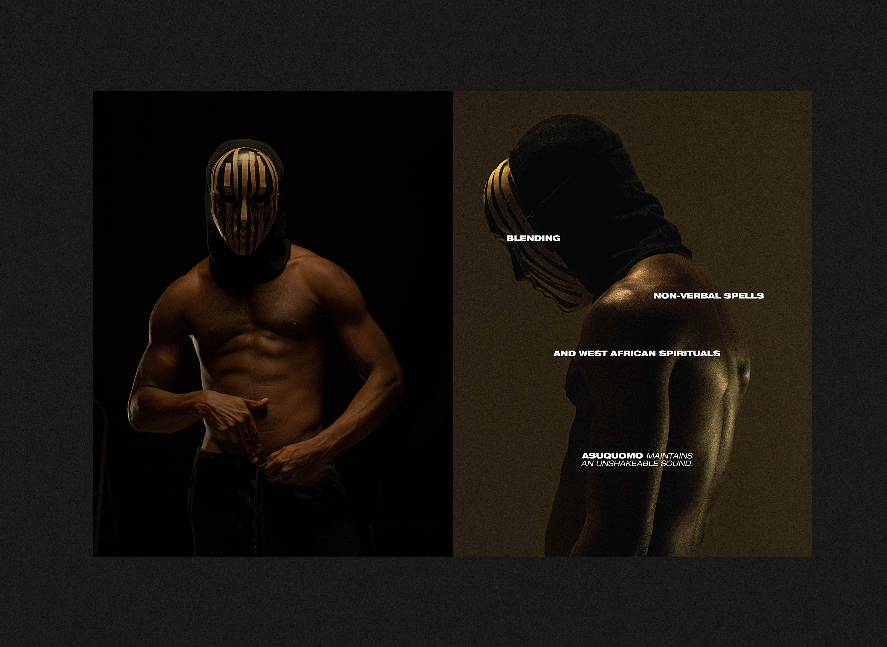
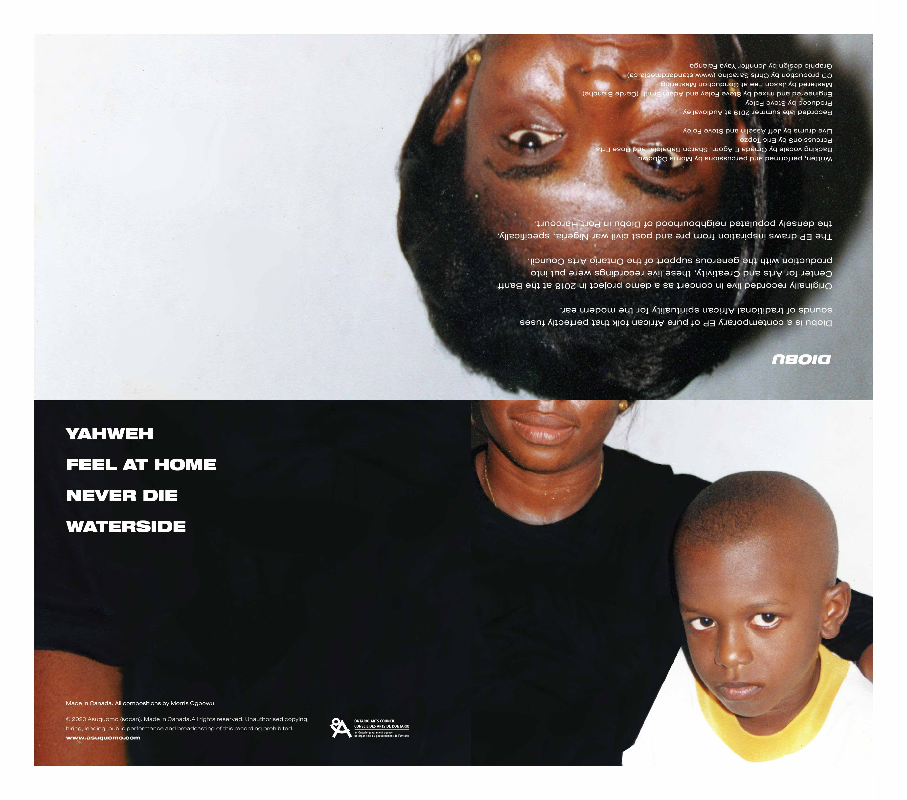
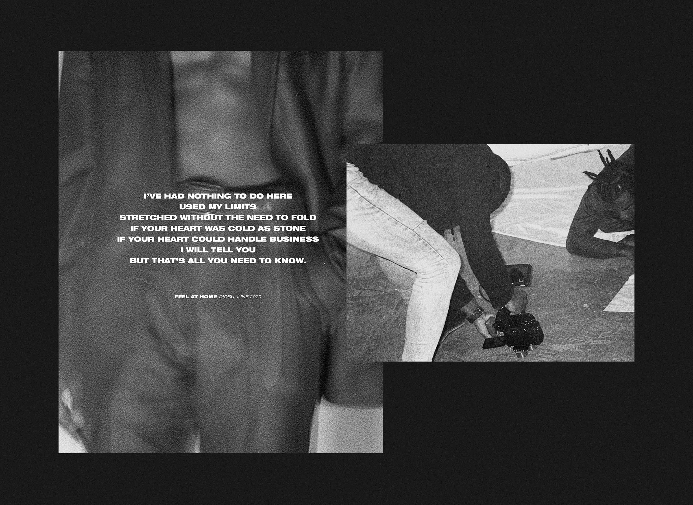

Creative Direction · Photography · Graphic Design
Asuquomo: Wide Awake visual campaign
Creative direction and visual development for multidisciplinary artist Asuquomo's concept album: bold, rhythmic, and deeply expressive.

Creative direction and visual development for multidisciplinary artist Asuquomo's concept album: bold, rhythmic, and deeply expressive.
In collaboration with multidisciplinary artist Asuquomo, I led the creative direction and visual development for promotional materials supporting the release of his concept album Wide Awake.
The challenge was building a cohesive visual language that aligned with the album's tone without illustrating it too literally. The work needed to feel bold and rhythmic, to draw from West African influences and the raw, spiritual energy of the music — while remaining visually distinctive enough to cut through in an urban context.
The result is a visual language that feels as much the work of the music as of the designer, bold where the album is bold, restrained where it asks for space.

These large-format posters announced the premiere of Asuquomo's video release, using shadow, repetition, and minimal typography to echo the project's moody, kinetic energy. The imagery captures the artist's presence while building anticipation for the broader campaign. Displayed in an urban setting, the visual treatment is simultaneously intimate and confrontational.

Dramatic portrait photography with sparse, rhythmic typography for Asuquomo's Electronic Press Kit. The layout mirrors the raw, spiritual energy of his sound, a visually immersive introduction to the artist's creative world.

A bold visual layout pairing unguarded portraiture with stark, modern typography for the album's limited-run CD release. The design reflects the album's exploration of lineage and belonging, a physical artifact that extends the album's visual world.

A layout blending documentary-style photography with a stark lyric display, capturing both the vulnerability and discipline behind Asuquomo's work. The textured black-and-white treatment echoes the raw emotional tone of the song and the physicality of the shoot. The spread adds a poetic pause within the EPK, grounding the viewer in the artist's world before the music begins.